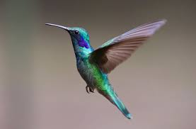
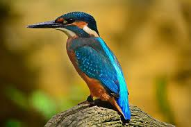
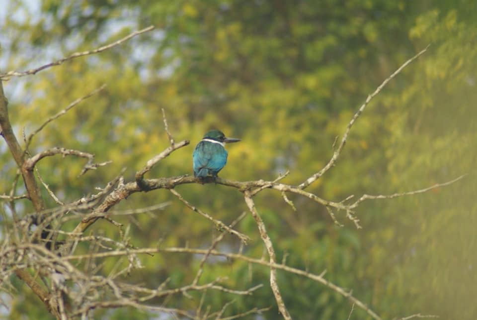
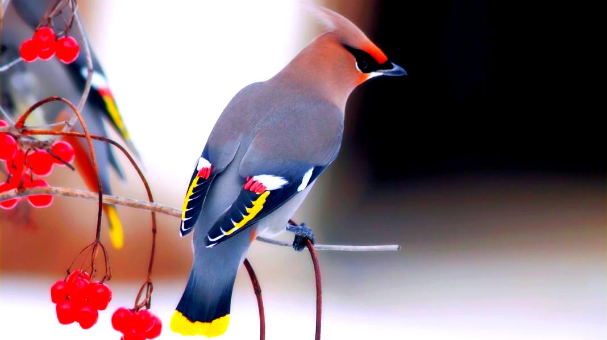
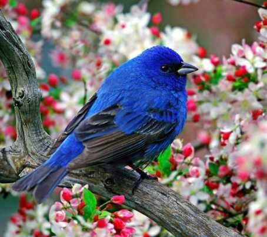
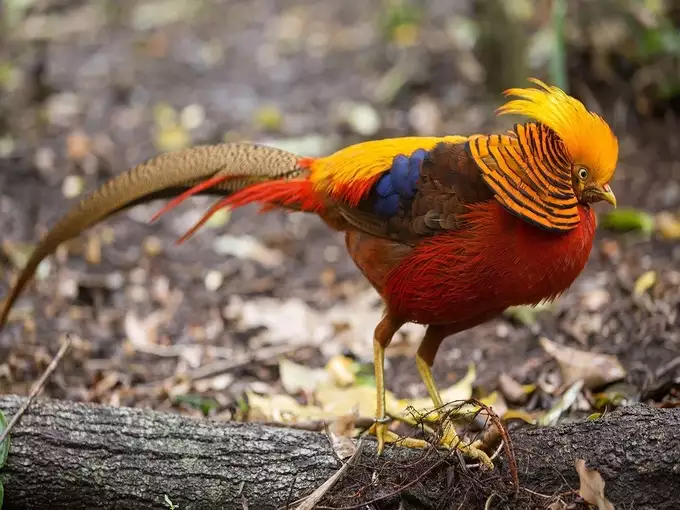
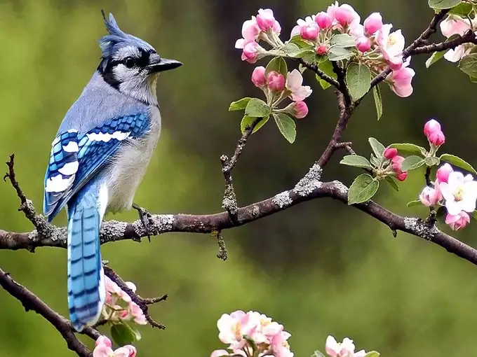

Doyel is a bird belonging to the genus Passeriform. Its scientific name is Copsychus saularis. The Oriental Magpie-Robin is a small passerine bird that was previously classified as a member of the thrash family Tardidi, but is now considered a flycatcher of the Old World.
The Golden Pheasant has a lively reddish-orange neck with a great golden fern, like a crest, on its head. They are found mainly in the dense forests of western China. The bird grows to about 90-105 cm and the length of the tail is two-thirds the size of a bird. However,the name Golden Pheasant comes from the ancient Greek word 'kharasolophos', which means 'painted'.
